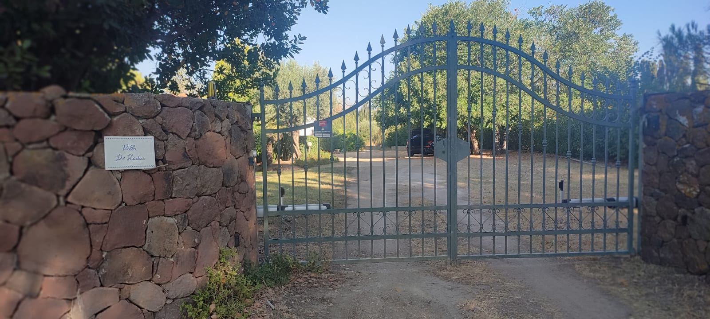

Vialetto e cancello d'ingresso
In questa immagine è mostrato il vialetto che si affaccia alla strada. Una volta entrati non dovrete andare a sinistra ma verso destra. Il cancello si troverà dietro la
cabina elettrica a torretta, come viene mostrato nell'immagine qua sotto.

Una volta arrivati troverete questo cancello dove al lato destro troverete la cassetta di sicurezza contente le chiavi.
Il codice è "0090".
Dovrete assolutamente effettuare la raccolta differenziata.
I rifiuti dovranno essere esposti sul suolo pubblico tra le ore 22:00 della sera prima e le ore 6:00 della mattina di raccolta, dovrete lasciare i cestini con la spazzatura corretta all'esterno del vialetto, vicino al ciglio della strada, e la mattina passeranno gli operatori ecologici per ritirare l'immondizia.
Quando gli operatori avranno finito di prelevare la spazzatura potrete portare in casa il cestino.
Al check out dovrete portar via tutta la spazzatura (che non sarà prelevata dagli operatori ecologici) e dovrete dirigervi al centro ecologico locale di cui vi forniamo la posizione.
Modalità di raccolta.
Orari di apertura
Mattina
Lunedi, Mercoledi e Sabato dalle 10:00 alle 12:00.
Lunedi, Mercoledi e Sabato dalle 15:00 alle 18:00.